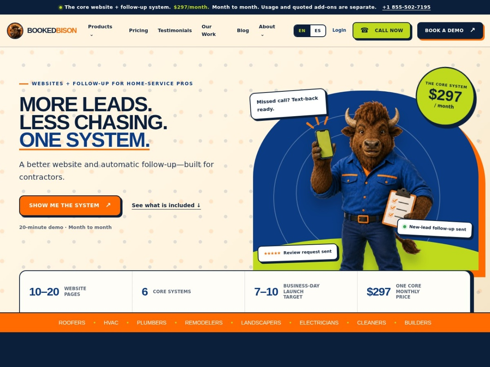
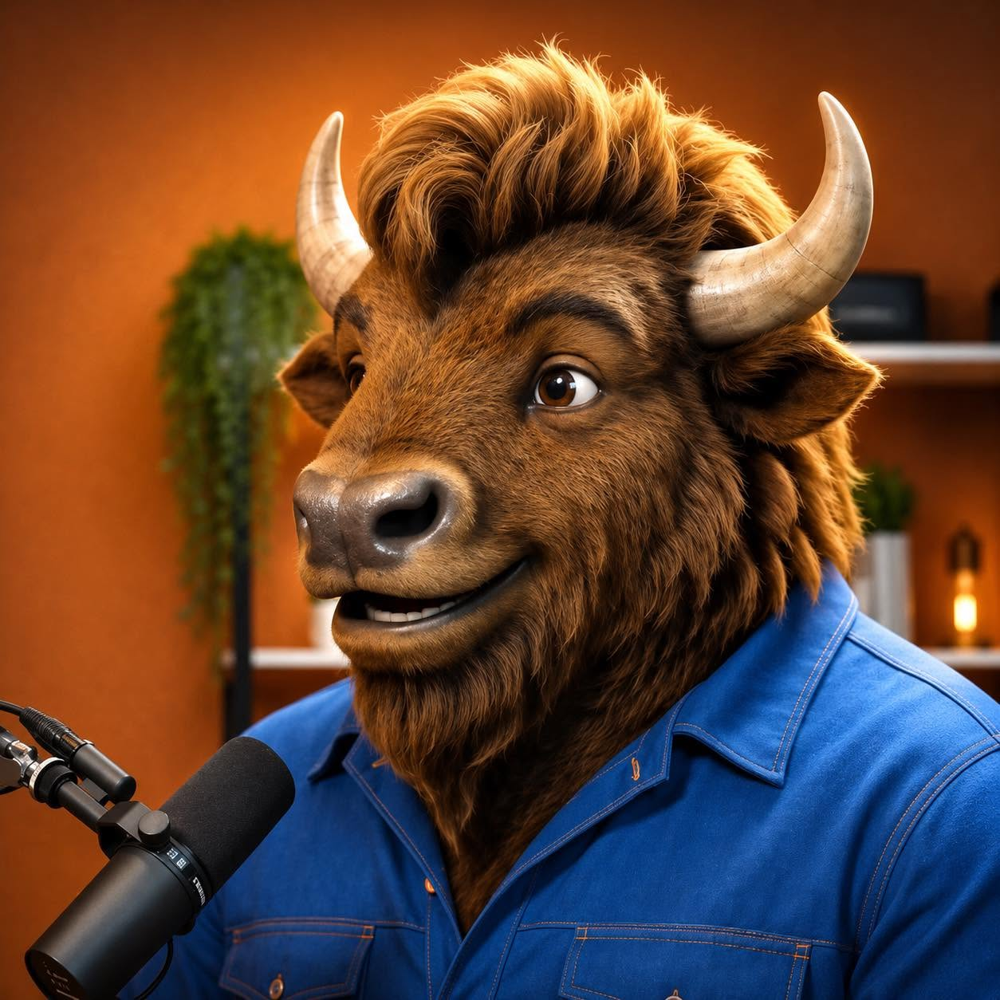

Booked Bison · Full digital ecosystem
From AI mascot to daily multi-platform brand.
We built the full website and funnel system, configured a completely white-labeled HighLevel CRM and created the AI mascot that appears across the website and social brand.
Services delivered
🌐 Website + funnelsConversion pages and complete customer journey⚙️ HighLevel CRMWhite-label setup, pipeline and automations🎬 AI social productionMascot creation and daily multi-platform content
Relatable if: you need your website, follow-up system and content to operate as one connected brand.
Reel content system
One mascot. Endless repeatable formats.
Benny becomes the on-camera personality for education, service explanations, relatable business moments and direct-response hooks.
“The lead came in. Did your business follow up?”Talking mascot
3 reasons your website is losing booked jobsWebsite breakdown
 Website + follow-up, working as one systemSystem walkthrough
Website + follow-up, working as one systemSystem walkthrough